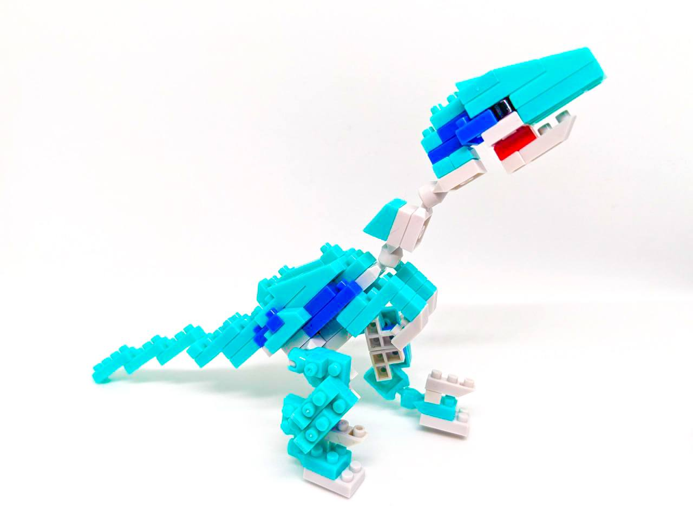
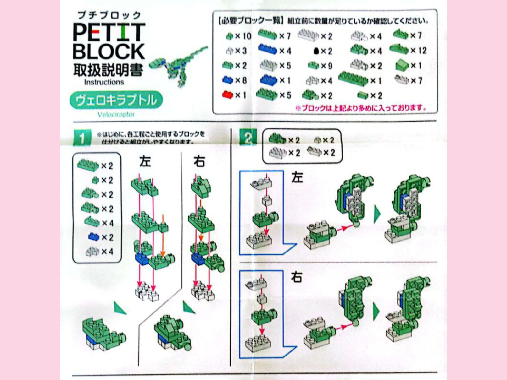
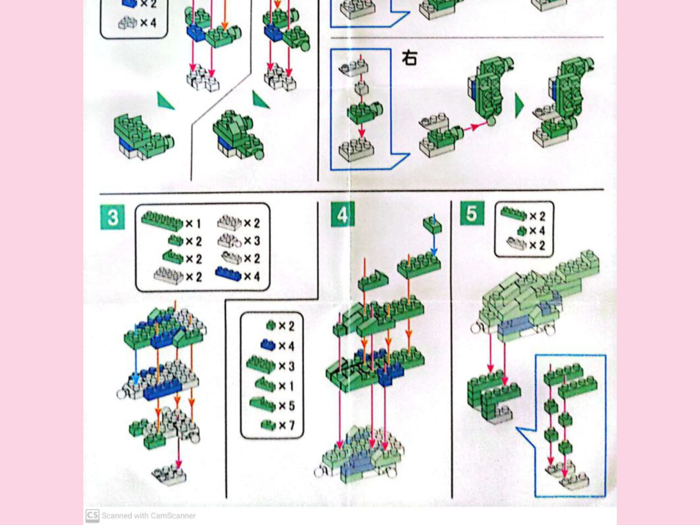
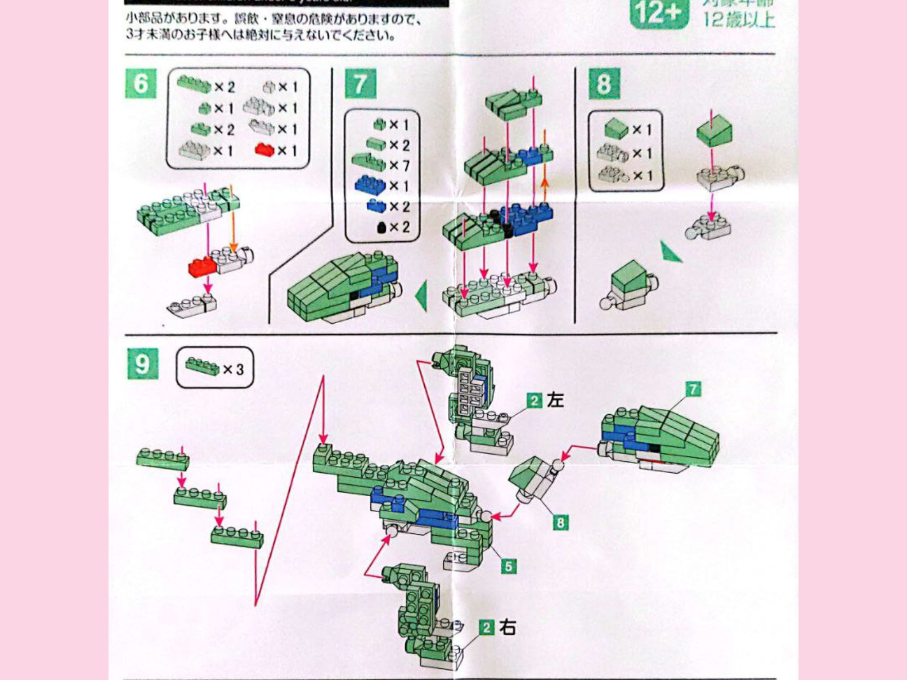
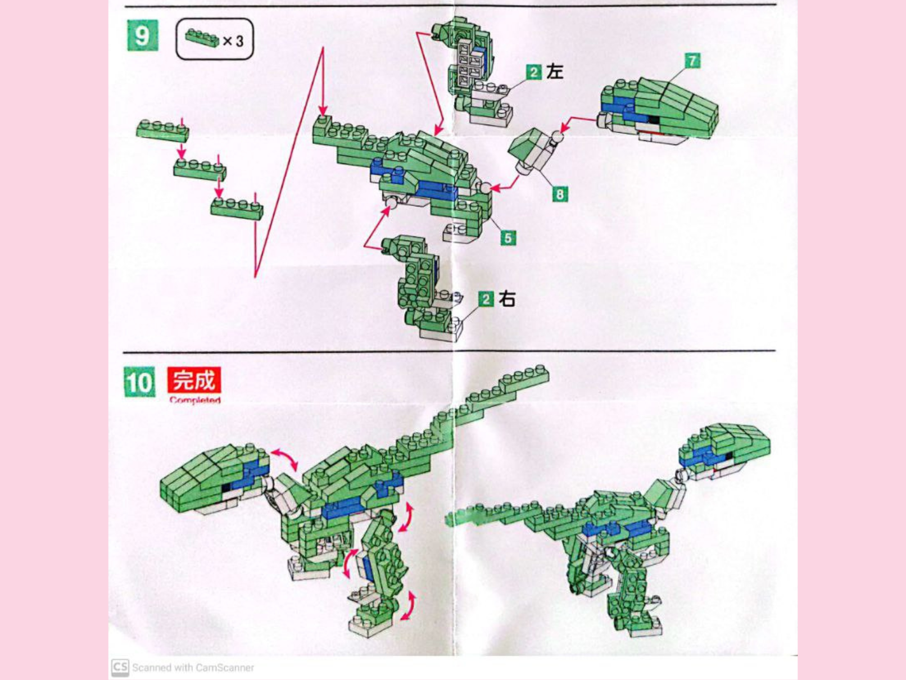

|
|


|
|
1
2
3
4
5
6
7
8
9
10
11
12


|
Dinosaur Friends SeriesVelociraptorJuly 4th, 2024, 1:20 am I couldn't find an eagle one but close enough. Happy 4th of July!
The Unboxing: Quality and First ImpressionsAs a fan of Daiso’s Petite Block series, I couldn’t resist trying the Dinosaur Friends: Velociraptor kit. This wasn’t just any model—it featured movable hands, feet, and legs, promising an interactive build that would truly bring the raptor to life. Excited by the challenge and curious about the mechanics, I immediately put it in my shopping basket. The Velociraptor kit came with an array of turquoise, whites, and blue blocks. Alongside the regular pieces were the movable part connectors, for it's limbs. This was a unique touch compared to other Petite Block kits I’ve built and added a layer of excitement to the project. As always, the instruction manual was concise and well-illustrated, breaking the assembly into clear, manageable steps. Still, I could tell this was going to be a more complex build, so I prepared myself for some intricate block placement and careful alignment. Watch this relaxing timelapse video below to see my sis building it! Instruction Manual




Difficulty: ⭐⭐⭐Building the VelociraptorThe build started part by part of the Velociraptor's limbs. The head, arms, legs, feet and the main body. The highlight, of course, was constructing the movable parts. The hands and legs attached seamlessly to the body, their mobility giving the raptor a lifelike dynamic. It was thrilling to adjust its stance, bending the legs into a stalking pose or raising its arms as if ready to pounce (exaggerating). While the instructions guide you to a classic Velociraptor look, there’s always room for creativity. For this build, I gave my raptor a slightly more menacing appearance by tilting its head forward and adjusting its legs to a crouched, ready-to-spring position. The articulation allows for endless possibilities—try posing your Velociraptor mid-run, mid-pounce, or even standing tall and surveying its domain. If you have other models in the Dinosaur Friends series, consider creating a prehistoric scene by combining them with accessories like faux plants or a rocky terrain base. These small additions can turn your display into a mini Jurassic diorama! Considering there were many movable parts and movable parts are known to always be an annoyance, (it's hard to lock them in), I give it a full 3 out of 3 stars in difficulty! My Tips!1. Organize Movable Pieces First: Lay out the articulated blocks and familiarize yourself with their connections before starting the main build. 2. Test Movement Regularly: As you build, gently test the articulation to ensure smooth motion and proper alignment. 3. Have Fun Posing Once the build is complete, experiment with different poses to find the one that feels most dynamic to you.
Do you love building Petite Blocks as much as I do? I’d love to hear your thoughts, tips, and experiences! If you’ve tackled the Velociraptor model—or if you have requests or questions—reach out to me on X at @nikilikespuchiburokku. Let’s keep the Petite Block community growing, one tiny block at a time. . . . If you're in my area and you're interested in buying this model, here's a map to guide you! |